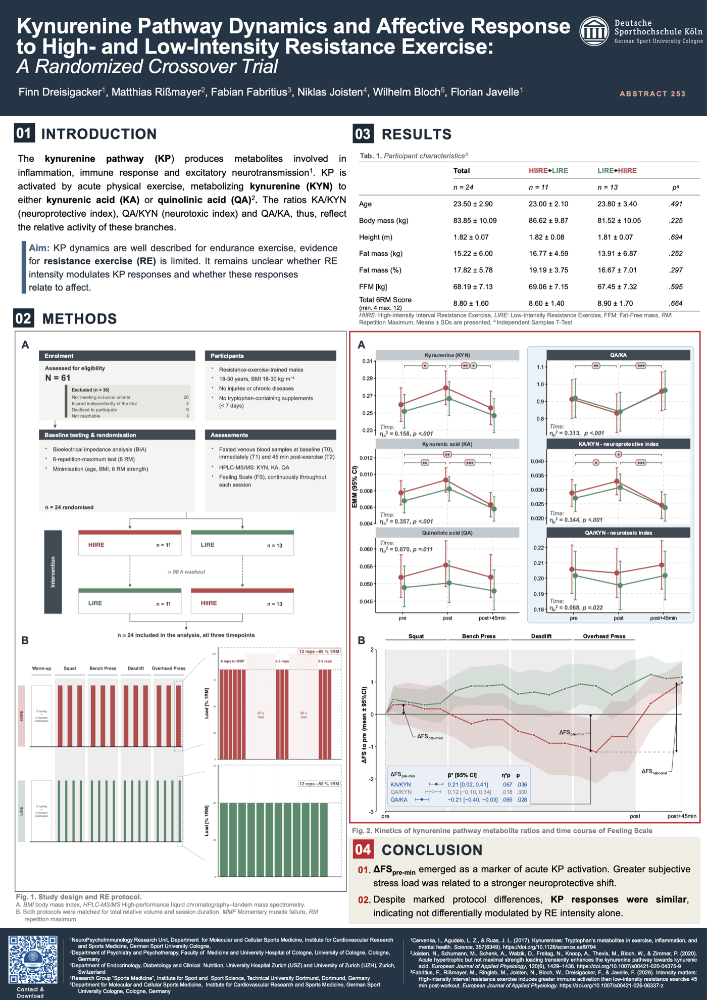

At a glance
- Design
- Randomized crossover trial
- Participants
- n = 24
- Conditions
- High-intensity interval resistance exercise (HIIRE)
Low-intensity resistance exercise (LIRE) - Blood sampling
- Pre, post and 45 min post exercise
- Outcomes
- Kynurenine pathway ratios (KA/KYN, QA/KYN, QA/KA) and affective response (Feeling Scale)
Related publication
Fabritius, F., Rißmayer, M., Ringleb, M., Joisten, N., Bloch, W., Dreisigacker, F., & Javelle, F. (2026). Intensity matters: High-intensity interval resistance exercise induces greater immune activation than low-intensity resistance exercise 45 min post-workout. European Journal of Applied Physiology. doi.org/10.1007/s00421-026-06337-z
Contact
Finn Dreisigacker · F.Dreisigacker@dshs-koeln.de · ResearchGate